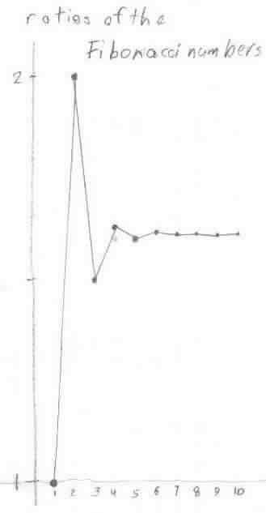

The ratios of successive Fibonacci numbers, the graph and comparing the Fibonacci and Nautilus shell spirals/chapter 7
The Fibonacci ratios:
Geoffrey worked on the Fibonacci numbers and got their ratios. He graphed the ratios, and saw they formed an infinite sequence that was alternating and approached the number 1.618033...

In Wells' "Dictionary of Curious and Interesting Numbers" he found that (Sqrt 5 +1)/2 = 1.61803... , was an irrational number, and was called The Divine Proportion or The Golden Mean.
Don and Geoffrey wrote a program in basic to get the ratios. Then that evening, Geoffrey and his Dad wrote a program in Mathematica to get the Fibonacci numbers. The following 9 lines formed the input, the output was the first 22 Fibonacci numbers below:1, 1, 2, 3, 5, 8, 13, 21, 34, 55, 89, 144, 233, 377, 610, 987, 1597, 2584, 4181, 6765, 10946, 17711
Dear
Don,
I was a student of yours about ten years ago. I just wanted to send you a
little note to let you know that I still very often use the most important
lesson that you taught me: when a problem is too difficult, first think of
an easier case of the problem and work from there.
I am now a student at the California Institute of Technology, studying
Chemistry. I very much enjoyed working with you when I was younger, and I
don't recall whether I ever really got to thank you, so I wanted to make
sure that I did that.
Thanks,
Geoffrey
Don compares the Fibonacci spiral with the Nautilus spiral
An old friend emailed Don to ask if there was a relationship between the Fibonacci numbers and the Nautilus shell. Don did the following in response to this question.
He found the Fibonacci polar equation in Coxeter's "Introduction to Geometry" and he used Mathematica to plot it with this command:
PolarPlot[((1+Sqrt[5])/2)^(2*n/Pi),{n,0,4*Pi}, AspectRatio -> Automatic, PlotStyle->
{Thickness[.01],RGBColor[0,0,1]}];
The angles (alpha) measured below are the smaller of the two formed by the radius vector, say OB3 and the tangent to the curve at point B3 (four of these were done and averaged). The radius vectors, say OB3 and OA3 (360' apart) were measured and the ratio OB3/OA3 was calculated (four of these were done and averaged).

Both spirals-Fibonacci and Nautilus shell, below- are equiangular. The angles of the tangent to the spirals shown above average 74' , and 79.5' below, with a growth in the radius vector average of 6.7 and 3.2 below, in 360'. Don hasn't seen this done for the Fibonacci spiral before. He would be interested in hearing from others who have done this.
Nautilus shell
Polar Equation: r = Ex'Cot[79.5 'p/180];
Ratio of radius vectors every 360' is ~3.2;
Smaller angle between tangent to curve and radius vector is ~79.5'
PolarPlot[E^(x*Cot[79.5*Pi/180]),{x,0,4*Pi}, AspectRatio -> Automatic, PlotStyle
->{Thickness[.011],RGBColor[1,0,1]}];